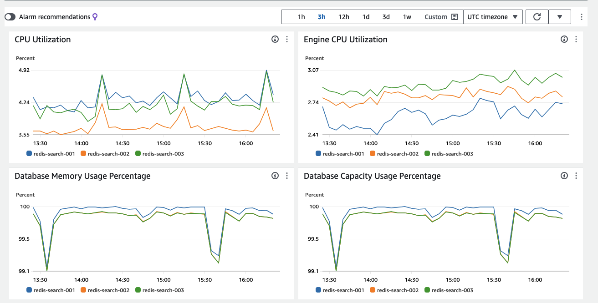

Cloud FinOps
Estrategias de ahorro en la nube
Cómo optimizar tu factura cloud
AWS Community Day Spain 2024 | Cristina Rancaño && Ramiro Alvarez
Quiénes somos?
- DevOps Engineer
- Helmcode: DevOps as A Service
- Ozona.tech: Digital transformation, Internal DevOps
- CuriosidadesAWS Solutions Architect, ex-peluquera/esteticista
Cristina Rancaño
Quiénes somos?
- Platform Engineer Architect
- Empathy.co: e-commerce search, personalization
- Resizes: build Internal Developer Platforms
- Certs: Kubeastronaut, FinOps Certified Engineer, 28 certs
Ramiro Alvarez
Agenda
- ¿Qué es FinOps?
- Fases en FinOps
- Sostenibilidad
- Optimizaciones
- Recomendaciones
- Conclusiones
- Q&A
¿FinOps?
- Práctica cultural.
- Connseguir el máximo valor del negocio ayudando a ingeniería, finanzas y negocio a colaborar
- Hacer dinero para poder usarlo en innovación, experimentación...
FinOps: fases

- Visibilidad de costes
- Oportunidades de mejora de costes
- Mejora continua
Sostenibilidad

Sostenibilidad

Sostenibilidad

Sostenibilidad
- Inversores están pidiendo a los ejecutivos ser conscientes de las emisiones
- Regulaciones
- Compras basadas en ética
- Empleados requieren ser más sostenibles
Sostenibilidad
- Reducir lo que usamos (evitar costes)
- Rightsizing
- Downscale off hours
- Aplicaciones sin uso
- Adoptar tecnologías Cloud Native
- Pagar menos por lo que usamos (reducción de la tarifa)
- Reserva de instancias
- Saving Plans
- Spot Instances
Optimizaciones: Rightsizing
resources:
requests:
memory: "1Gi"
cpu: 1
limits:
memory: "1Gi"
cpu: 1
Reducir lo que usamos
Optimizaciones: Rightsizing
Captura de kubecost con los savings
Reducir lo que usamos
Optimizaciones: Rightsizing
resources:
requests:
memory: "64Mi"
cpu: "250m"
limits:
memory: "128Mi"
cpu: "500m"
Reducir lo que usamos
Optimizaciones: Rightsizing
Imagen del impacto en costes de rightsizing
Reducir lo que usamos
Optimizaciones: Downscale off hours
| €/Día |
€/Semana |
€/Mes |
€/Año |
| 300 |
2100 |
8400 |
100800 |
Reducir lo que usamos | Downscale resources off hours
Optimizaciones: Downscale off hours
| Downscale 8h and weekends |
Downscale 12h and weekends |
| 1000€/semana |
750€/semana |
| Ahorro 52% |
Ahorro 65% |
Reducir lo que usamos | Downscale resources off hours
Optimizaciones: Downscale off hours
| Tipo |
€/Semana |
€/Mes |
€/Año |
Ahorros |
| 24/7 |
2100 |
8400 |
100800 |
- |
| 8h down |
1000 |
4000 |
48000 |
52% |
| 12h down |
750 |
3000 |
36000 |
65% |
Reducir lo que usamos | Downscale resources off hours
Optimizaciones: Unused workloads
Reducir lo que usamos | Unused workloads
Optimizaciones: Unused workloads
 Reducir lo que usamos | Unused workloads
Reducir lo que usamos | Unused workloads
Optimizaciones: Unused workloads
| €/Semana |
€/Mes |
€/Año |
| 14 |
56 |
672 |
Reducir lo que usamos | Unused workloads
Optimizaciones: Unused workloads
 Reducir lo que usamos | Unused workloads
Reducir lo que usamos | Unused workloads
Optimizaciones: Embrace Cloud Native
Reducir lo que usamos | Embrace Cloud Native
Optimizaciones: Embrace Cloud Native

Reducir lo que usamos | Embrace Cloud Native
Optimizaciones: Evitar costes
| Tipo |
€/Semana |
€/Mes |
€/Año |
Ahorro |
| Rightsizing |
2100 |
8400 |
100800 |
- |
| Off Hours 12h down |
750 |
3000 |
36000 |
65%() |
| Unused workloads |
750 |
3000 |
36000 |
65%() |
| Embrace cloud native |
750 |
3000 |
36000 |
65%() |
Optimizaciones: Reserva de instancias
Pagar menos por lo que usamos | Reserva de Instancias
Optimizaciones: Reserva de instancias
| Tipo de Reserva |
€/mes |
€/año |
€/3 años |
Ahorro |
| On demand |
46 |
552 |
1656 |
- |
| 1 year - No Upfront |
30.5 |
366 |
1098 |
34% |
| 3 year - Upfront |
20 |
240 |
720 |
56% |
Pagar menos por lo que usamos | Reserva de Instancias
Optimizaciones: Savings Plans
- Compute Savings Plans
- EC2 Instance Savings Plans
- SageMaker Savings Plans
Pagar menos por lo que usamos | Saving Plans
Optimizaciones: Savings Plans
 Pagar menos por lo que usamos | Saving Plans
Pagar menos por lo que usamos | Saving Plans
Optimizaciones: Savings Plans
 Pagar menos por lo que usamos | Saving Plans
Pagar menos por lo que usamos | Saving Plans
Optimizaciones: Spot Instances
Pagar menos por lo que usamos | Spot Instances
Optimizaciones: Spot Instances
| Tipo de Reserva |
€/5 días |
€/año |
Ahorro |
| On Demand |
131 |
9563 |
- |
| Spot Instances |
54 |
3942 |
59% |
Pagar menos por lo que usamos | Spot Instances
Optimizaciones: Reducción de tarifa
| Tipo |
€/día |
€/Mes |
€/Año |
Ahorro |
| Reserva de instancias |
30.5 |
366 |
1098 |
34%() |
| Saving plans |
41 |
1228 |
14736 |
28%() |
| Spot instances |
54 |
324 |
3942 |
59%() |
| Total |
125.5 |
1918 |
19776 |
Calcular |
Optimizaciones: Global
| Tipo |
€/Semana |
€/Mes |
€/Año |
Ahorro |
| Evitar costes |
2100 |
8400 |
100800 |
- |
| Reducción de la tarifa |
750 |
3000 |
36000 |
65% |
| Total |
750 |
3000 |
36000 |
65% |
Recomendaciones
| Potenciales Ahorros |
Oportunidad de Optimización |
| Evitar el 100% |
Encontrar y eliminar o apagar cosas sin uso |
| Ahorro 50% |
Consistencia en el uso |
| Ahorro 25% |
Rightsizing o modernización |
| Ahorro 1-100% |
Probar cosas diferentes para entregar el mismo valor |
Conclusiones
- Balancear coste, velocidad y calidad
- Optimizaciones
- Reducir el uso
- Pagar menos haciendo commitmments
- FinOps Champion